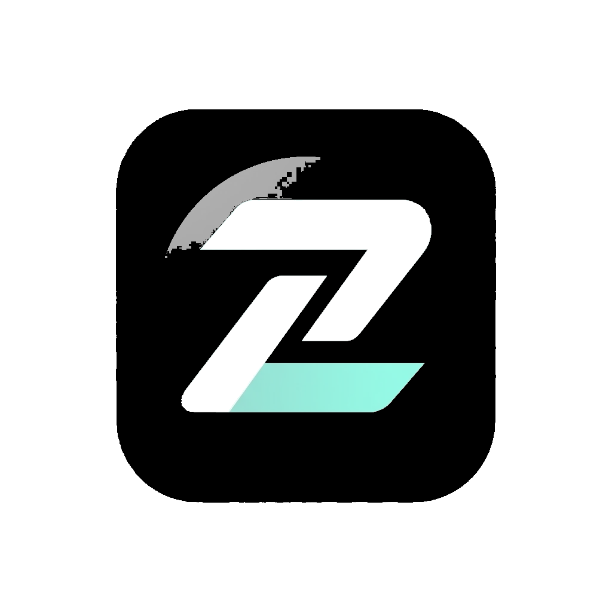

zyntek.
ReNova SENAI
SLIDE
01
/
21
ATO 1 · COMO FUNCIONA HOJE
Como o aluno vê
suas notas hoje?
Hoje, o boletim é disponibilizado em PDF e a frequência é exibida em outra tela.
Boletim · PDF disponível ao aluno
Frequência · exibida em outra tela
ATO 2 · A SOLUÇÃO
ReNova
SENAI.
“A tecnologia precisa ajustar-se a quem usa o portal todos os dias.”
A PROPOSTA
Um portal pensado para o dia a dia de quem ensina e de quem aprende.
PORTAL · RENOVA SENAI
InícioNotasFrequênciaDiário
Visão geral Acessar o espaço pessoal
Notas e frequênciaConsulta imediata
Diário de ClasseUso do professor
AcompanhamentoAlunos e orientação
ATO 2 · FUNDAMENTAÇÃO TÉCNICA
Simples hoje.
Pronto para evoluir.
Base atual, dados armazenados e regras preservadas.
HTML5
Base da página
CSS3
Aparência
localStorageDados no navegador
Logos: HTML5 e CSS3 © W3C (CC BY 3.0) · JavaScript © Chris Williams (MIT/WTFPL)
VERSÃO ATUAL
Navegador, JavaScript e dados armazenados
→
EVOLUÇÃO PARA O USO REAL
Telas, servidor e banco de dados
ATO 3 · DEMONSTRAÇÃO · ACESSO
Tela de acesso
Um espaço para acessar e selecionar o perfil.
ATO 3 · DEMONSTRAÇÃO · PROFESSOR
Ambiente do professor
Chamada, PTD, conteúdo importado, notas de 0 a 100 e média calculada ou atribuída.
Subturmas, compensação de faltas abaixo de 75% e ocorrências registradas.
ATO 3 · DEMONSTRAÇÃO · ALUNO
Ambiente do aluno
Frequência com faltas e histórico, evolução do desempenho e boletim disponível para download.
ATO 3 · DEMONSTRAÇÃO · COORDENADOR
Ambiente do coordenador
Criação de turmas, definição dos professores e organização das disciplinas.
ATO 3 · DEMONSTRAÇÃO · ORIENTADOR (AQV)
Ambiente do orientador (AQV)
Registros importantes e situações que exigem acompanhamento do orientador.